意式质感
低 Logo、低饱和、天然皮革、麂皮与细腻尼龙；不使用马术、Polo 或学院符号。
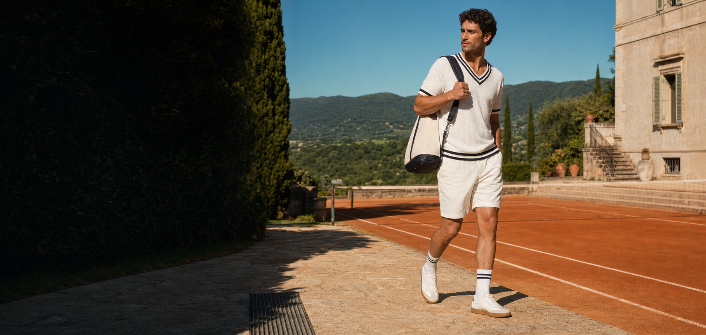
中国大陆品牌定位与 2026 秋冬上市手册。以意大利材料审美、复古运动文化与城市舒适度，定义一双从通勤走到会面、球场与周末社交的鞋。
1946 年，Leardo Gabrielli 在米兰创立 L'Alpina Maglierie Sportive，以创新纱线与技术针织进入运动市场。
品牌以滑雪针织累积口碑，并在 1956 年通过 Australian 进入网球场景；技术、优雅与功能的交点由此成为其长期资产。公开资料记录其由技术针织延展至高端时装，并有与 Giorgio Armani、Gianfranco Ferrè 的合作记录。
今天的中国大陆叙事不应复制旧时代，而应把“材料创新、运动优雅、山地自然”翻译为可日常穿着的城市机能鞋履。
依据：CIFF、米兰市图书馆、Tennis Zone。商业传播前由品牌方复核。
中国大陆传播应把 L'Alpina 已有的国际历史与当代方向转化为品牌资产，而非虚构“全球销量”“渠道数量”或未获授权的专业背书。
资产使用原则：所有年份、合作、授权、商标、赛事和产品性能在公开发布前须以 L'Alpina 品牌方书面材料复核。来源：CIFF L'Alpina、米兰市图书馆、Australian 品牌资料。
L'Alpina 中国大陆定位为“意式优雅复古鞋履”。面向 35–45 岁城市中产男性，以考究材质、克制细节与舒适脚感，服务通勤、会面、城市通行与周末社交。
这不是户外性能鞋履。品牌不以越野、登山或专业运动性能建立价值，而是以意大利运动历史为灵感，把复古比例、真实材料与得体日常穿着放在同一双鞋上。
意大利的优雅感，复古运动的分寸感。
Brand essence低 Logo、低饱和、天然皮革、麂皮与细腻尼龙；不使用马术、Polo 或学院符号。
适合久走、通勤、会面与旅行的轻量舒适；不夸大抓地、防水或专业运动性能。
以跑步、网球与城市生活的优雅比例为内核；不虚构赛事背书或性能证明。
对外禁用：LP 平替、老钱风平替、同款、致敬任何竞品。推荐用语：意式优雅复古、城市通行、低调质感。
以下为首发策略假设，不是市场统计结论。它们将通过内容点击、收藏、加购、支付、尺码反馈与复购数据持续验证。
35–45 岁城市男性；需要一双可搭配针织、夹克和轻西装的日常鞋。优先测试复古城市跑鞋与薄底城市运动鞋的通勤穿着时长、尺码稳定性和复购。
35–45 岁城市女性；重视麂皮、轻便、低调配色与旅行适配。优先测试套穿旅行鞋的脚背包容度、搭配收藏和场景转化。
伴侣或家庭出行人群；将“同一审美、不同鞋型”作为内容线索。优先测试男女搭配内容的完播、收藏、私信咨询与连带购买。
每个画像不以年龄标签投放，而以场景素材测试。首轮只保留能同时带来收藏、加购与低尺码退货的内容/鞋型组合。
该模块为内部用户分层与验证框架；年龄、性别与场景来自本手册既定目标客群设定，不代表外部市场规模或消费数据。
2026 秋冬首发聚焦三个鞋型家族，男款优先；两个新增鞋型进入开发候选池，上市季度须在样品、商标、供应链与小样反馈完成后确认。
| 优先级 | 鞋型家族 | 建议零售价 | 角色 |
|---|---|---|---|
| 主类目 | 复古城市跑鞋 | 699–899 元 | 尼龙与麂皮的复古跑步轮廓；承担城市通行、内容传播与日常转化。 |
| 首发历史款 | 复古网球生活鞋 | 599–799 元 | 低帮皮革鞋面与城市日穿脚感；承接 L'Alpina 的网球文化资产。不得宣传为专业比赛鞋，除非具备完整性能证据。 |
| 胶囊 | 麂皮意式休闲鞋 | 699–899 元 | 低调麂皮、皮革内里与轻量低底；承接通勤会面、周末社交与品牌形象。 |
| 开发候选 | 薄底城市运动鞋 | 待样品核算 | 低重心、窄轮廓与麂皮材料感；不使用 Speedcat 名称、标识、鞋侧符号或可识别鞋型语言。 |
| 开发候选 | 麂皮套穿旅行鞋 | 待样品核算 | 柔软麂皮、套穿结构与轻量低底；不使用 “Summer Walk” 名称、商标、设计或传播暗示。 |
商品详情页只使用可被供应商文件和实物验证的材质、重量、鞋楦、舒适度、耐磨与尺码信息；不使用未验证的户外或专业运动功能表述。
核心客群是追求得体与舒适的城市男性：愿意为好材质、好脚感和低调设计付费，但不愿为大 Logo 或硬核户外装束买单。
价格纪律：499–899 元为主力带。拒绝以低价秒杀建立首轮心智；使用材质、脚感、场景与售后服务支撑成交。市场验证显示，运动休闲鞋的中高价格段能够贡献销售额，但低价段竞争更依赖促销，故 L'Alpina 不应进入低价战。查看来源
确认鞋履授权链路、中文名称、第 25 类商标、产品合规、尺码表、材质与舒适度证明；建立每款详情页的证据包。
小红书与抖音种草，围绕“办公室 / 城市通行 / 周末会面”三条真实路径制作内容；天猫承接搜索和交易。
以“从会议到晚餐”为主题，邀请商务通勤、城市生活、网球与男士穿搭创作者；收集脚型、尺码、材质、场景与价格反馈。
按鞋型、价格、色码和内容场景复盘。只补货表现最好的两个家族；胶囊款以连带销售与内容转化决定是否扩色。
一条内容同时呈现办公室、城市通行与周末会面。用穿着场景与得体比例，而非机能词解释产品价值。
以第三方男装完成简洁、考究的造型，不销售服装。服装是鞋履的语境，不是新的库存负担。
连续步行、地铁通勤、餐叙与短途旅行的体验记录；每条内容要能回到具体款式与尺码建议。
展示皮革、麂皮、织物、鞋底和工艺细节；不主张未经验证的高级材料或专业赛事性能。
先建立证据，再建立传播。新品、内容和补货决策只使用平台和活动沉淀的真实数据。
“Summer Walk” 为 Loro Piana 在鞋履领域使用/申请的名称；本手册只将其作为禁止使用的外部参照，不作为产品名、关键词或内容标签。查看商标记录
竞品锚点：ASICS GEL-VENTURE 6 / GEL-KAHANA 8 等复古跑鞋。L'Alpina 不以越野符号竞争，而以更干净的楦型、尼龙与麂皮组合、低饱和配色进入城市日穿场景。
竞品锚点：adidas VL COURT 等经典低帮场地鞋。L'Alpina 的切入点不是复刻 T 头鞋，而是把自身网球文化连接转译为皮革、麂皮与城市舒适度兼顾的原创低帮鞋。
低调麂皮、精细皮革收口与轻量低底是该类目的价值核心。L'Alpina 应服务会面、通勤与周末社交，不追逐校园风或单一潮流符号。
竞品货架参考：ASICS 京东自营、adidas 京东官方旗舰店。其款式、价格与评论为动态信息，仅作上架前货架核验依据。
结论：复古跑鞋仍有增长信号但竞争已强；德训鞋已从趋势验证进入差异化与脚感筛选阶段；休闲鞋需用材质、舒适与中段价位证明价值，而非依赖低价促销。
公开信号：魔镜洞察披露，2025 年 9 月线上跑步鞋销售额为 33.3 亿元，同比增 23.6%；其 Top3 中同时出现主打“复古”的 ASICS 与美津浓产品。对 L'Alpina 的含义：不做专业跑鞋对手，而以低饱和材质、窄楦比例、城市穿搭和真实久走体验切入。
公开信号：新华网转引的 2025 报道显示，“德训鞋”在小红书已有 155 万篇相关笔记、词条浏览超 10 亿；同时，adidas 天猫旗舰店销量前十中有四款德训鞋。报道也记录了磨脚与脚型适配讨论。对 L'Alpina 的含义：2026 秋冬只能小批测试，以脚背包容、鞋头空间和原创拼接验证真实脚感；2027 春夏是否主推取决于退货与复购，而非内容热度。
公开信号：尚普咨询《2025 年中国运动休闲鞋市场洞察报告》称，74% 受访者年购 1–4 双；其所述抖音数据中，439–749 元中段价格带贡献 25.5% 销售额。对 L'Alpina 的含义：以皮革、麂皮、易搭配、可旅行与会员服务支撑中段价格；不以价格战定义品牌首轮认知。
数据口径提示：复古跑鞋为线上运动鞋数据；德训鞋为平台内容/货架信号；休闲鞋为第三方调研样本。三者不能相加为市场规模，应用于鞋型优先级与测试设计。来源：魔镜洞察报告、新华网、尚普咨询。
Norman Walsh 是成立于 1961 年的英国运动鞋履品牌，其公开资料显示品牌由奥运田径钉鞋、山地与 fell-running 鞋履发展而来；官网同时经营经典、复古、性能、城市步行与徒步分类。
| 维度 | L'Alpina 中国策略 | Norman Walsh 公开信号 |
|---|---|---|
| 遗产原点 | 1946 米兰；技术针织、滑雪与网球文化连接。 | 1961 英国；奥运钉鞋、山地与 fell-running 鞋履。 |
| 当代货盘 | 复古城市跑鞋、网球生活鞋、麂皮意式休闲鞋；2027 春夏扩展原创场地训练鞋。 | 官网显示 Classic、Retro、Performance，以及 City Walk、Hiking 分类。 |
| 产品表达 | 意大利考究材料 + 城市舒适 + 克制复古比例。 | 英国制造/运动遗产叙事，同时保留部分中国制造的原产地分类。 |
| 可借鉴 | 以可追溯的运动历史建立“日常穿着的运动鞋履”信任；用清晰系列与场景分类组织货盘；用档案、工艺、楦型内容替代大 Logo。 | |
| 不可复制 | 不得使用 Walsh 的型号、色彩组合、英国制造主张、运动员背书或其视觉资产；L'Alpina 必须以意大利材料创新、网球文化与优雅复古建立自身叙事。 | |
Walsh 对标结论：它证明“小而深的运动遗产 + 当代生活方式分类”可以并存；L'Alpina 应做“意式优雅复古鞋履”，而不是英式复古跑鞋的替代者。依据：Norman Walsh 官网（2026-07-31 检索）。其官网列示 Tornado、European、PB 等系列及英国/中国制造分类；价格、渠道与产品构成会动态变动，不作为中国定价依据。
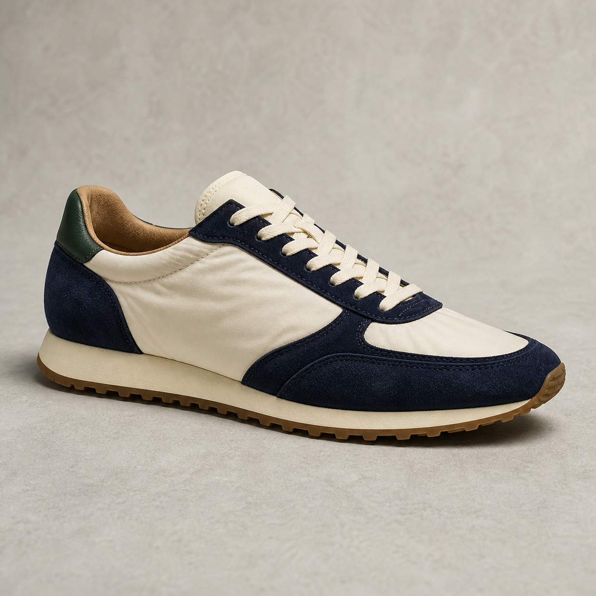
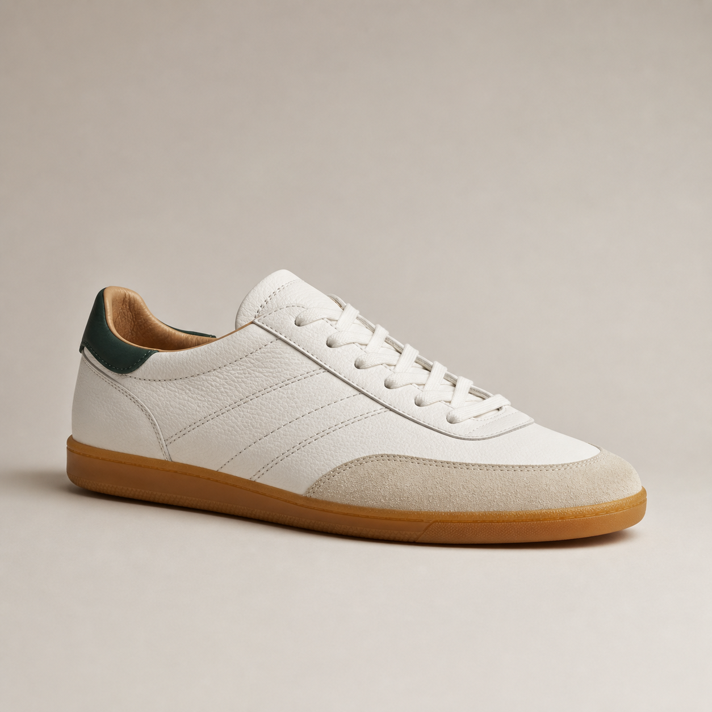
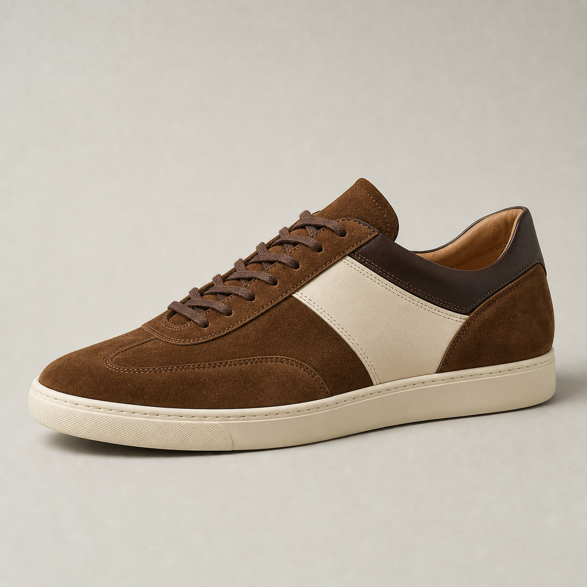
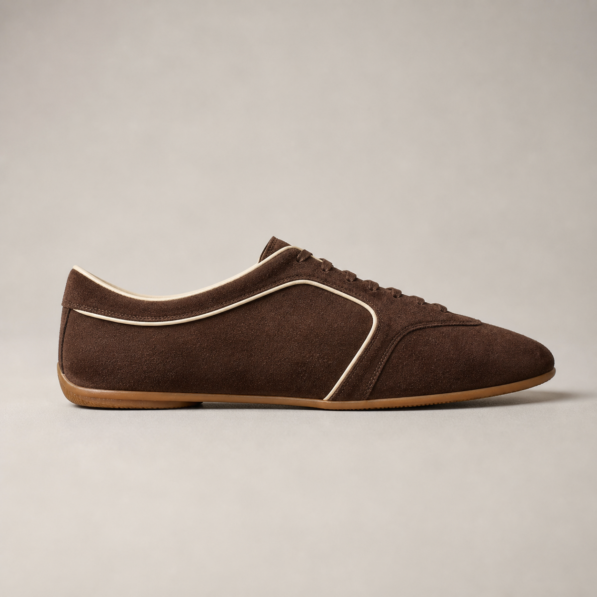
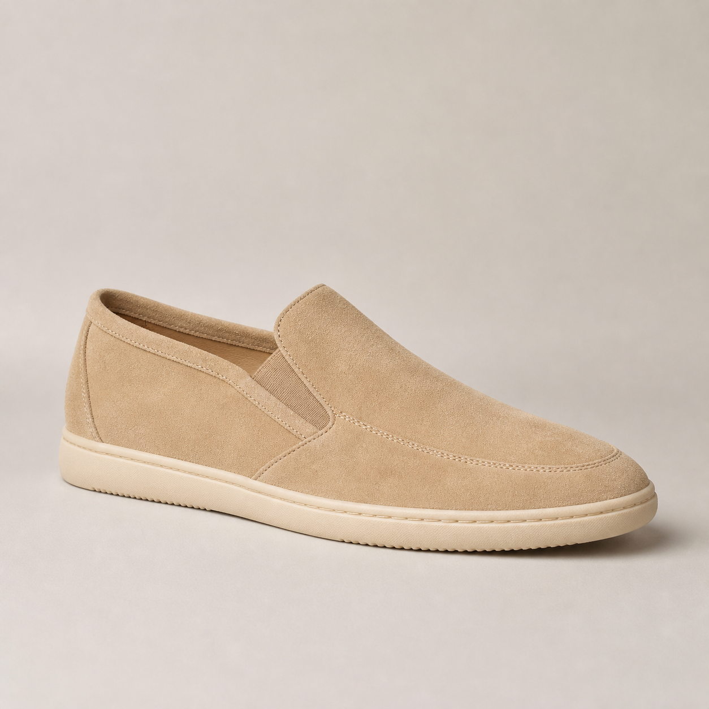
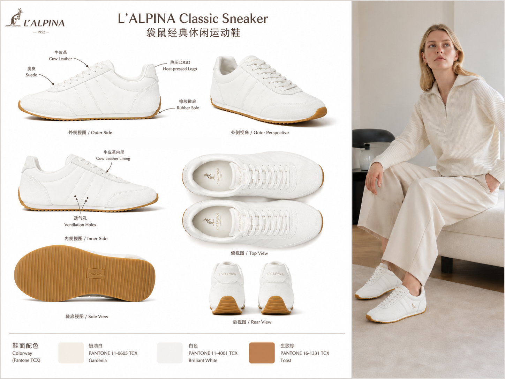
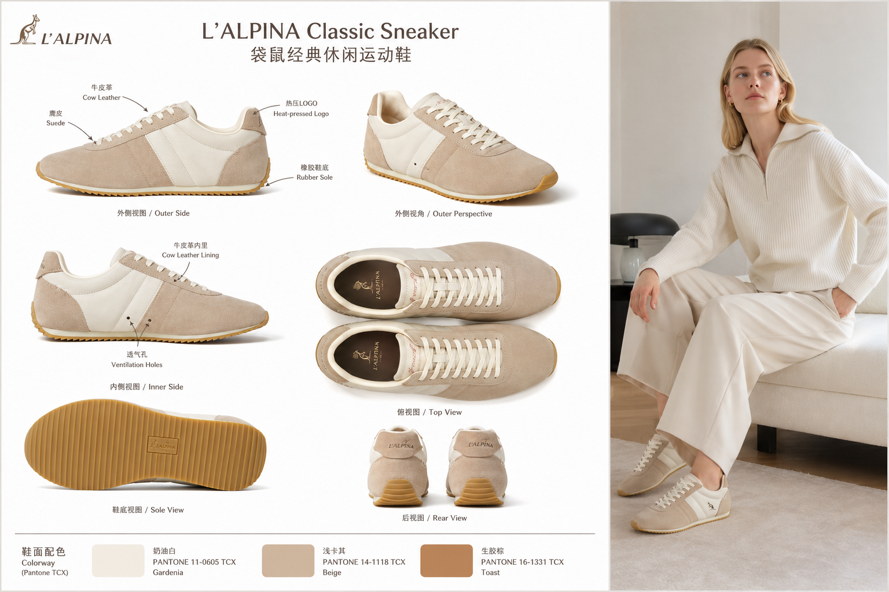
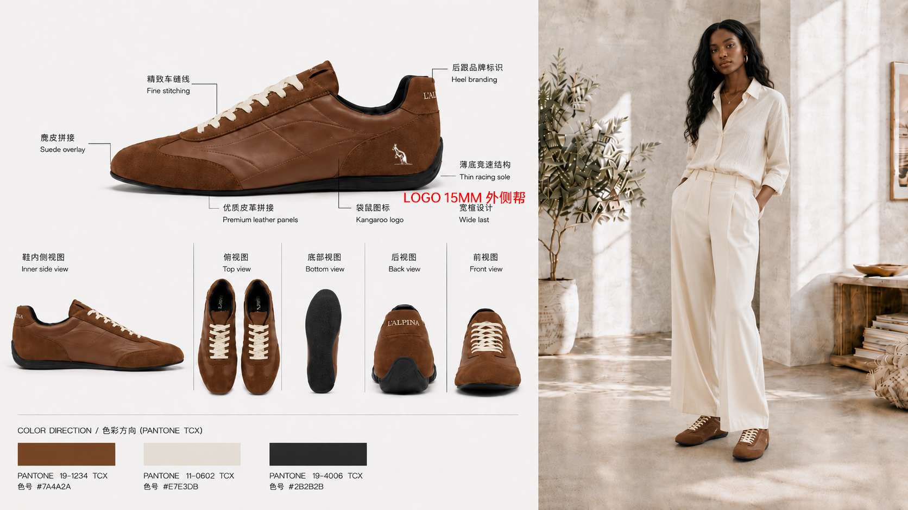
L'Alpina 于 1946 年在米兰创立，最早以技术针织进入运动市场，并在网球与高端时尚语境中积累品牌资产。今天，中国大陆不复刻过去，而是把“性能、当代审美、山地自然”翻译为城市男性可每日穿着的鞋履。
故事不是“从山上征服城市”，而是让人从城市出发，拥有随时走向自然的自由。每一双鞋都应把意式克制、稳定脚感与真实材料放在同一层级。
品牌历史与当代国际方向依据 CIFF 的 L'Alpina 品牌资料；在使用年份、合作、产地或材质时，须以品牌方书面资料二次核验。
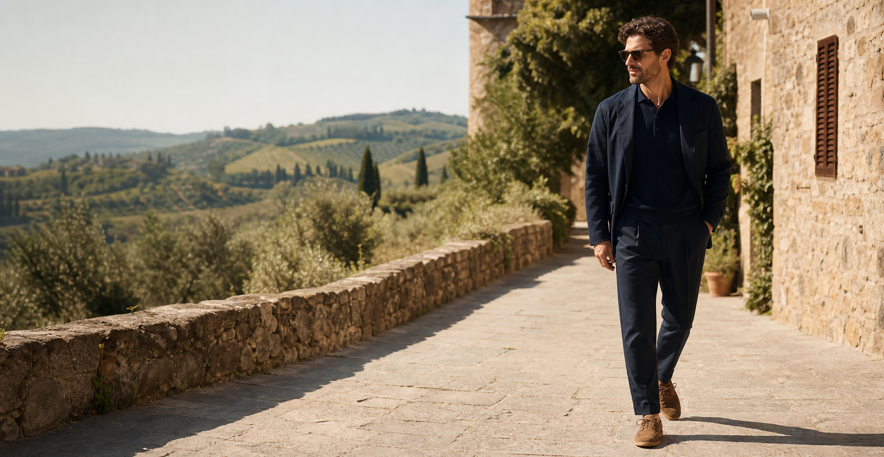
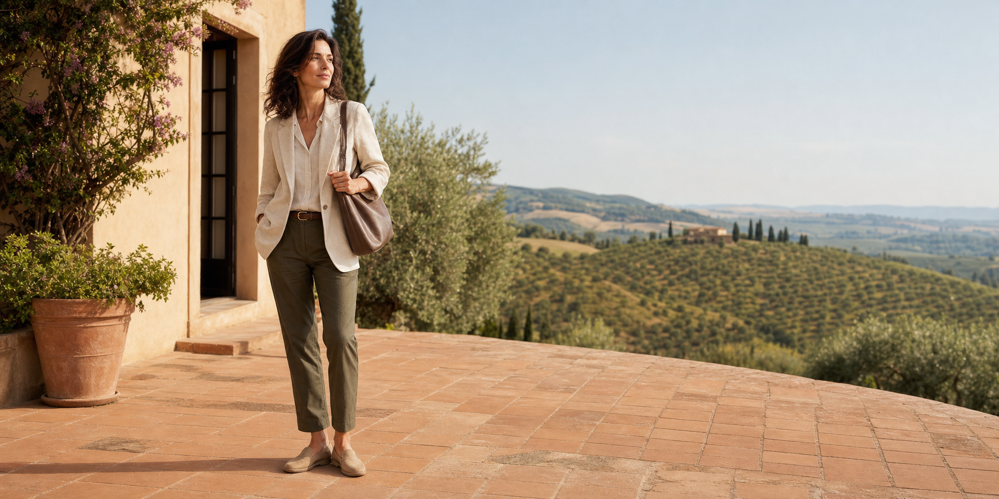
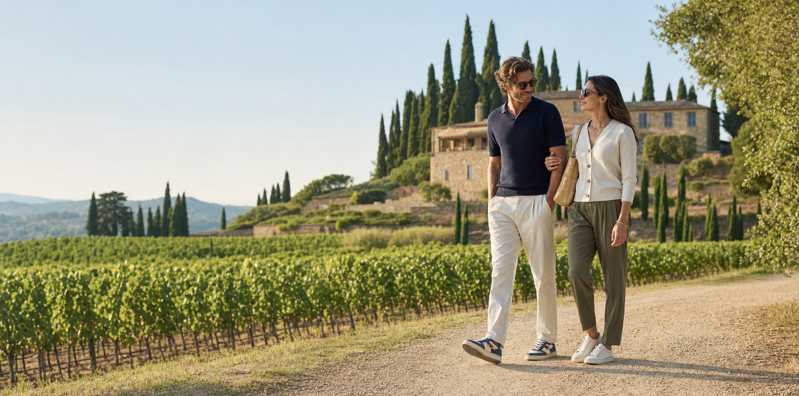